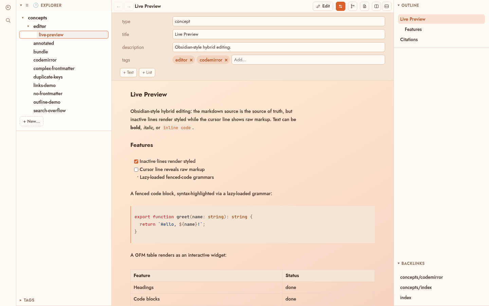
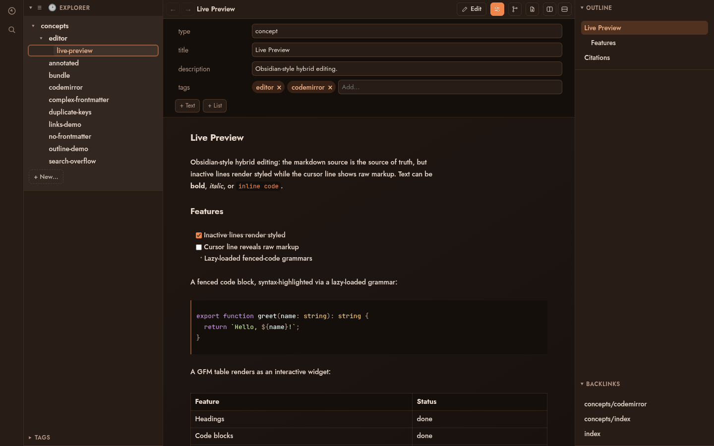

A markdown editor for folders of .md files in git.
Desktop app for Linux, macOS and Windows: wikilinks, backlinks, live preview,
full-text search, and a diff of every file against HEAD.
The same editor also runs as a Docker image that commits every save
and syncs with your git remote.
MIT licensed, built with Tauri 2, SvelteKit and Rust.
Try it without installing
$ npx sunstone-md ./docs
Serves the full editor at localhost:3000. Needs Node. Edits are written to disk.
Open a folder from the terminal
$ sunstone ./docs


Compared to Obsidian
Same core idea, markdown files with links between them. The differences:
| Obsidian | Sunstone | |
|---|---|---|
| Opening notes | Create or open a vault; settings live in .obsidian/ inside it | Open any folder: sunstone ./docs. Nothing is written into it except your edits; settings live in ~/.config/sunstone/ |
| Link syntax | [[Page]], [[Page#Heading]], [[Page|text]], markdown links | The same, so existing notes work as they are |
| Extending | Community plugin ecosystem | Fixed feature set, no plugin API |
| Sync | Obsidian Sync (paid) or a third-party plugin | git. Review diffs in the app; the web server can commit and push for you |
| Publishing | Obsidian Publish (hosted) | Self-hosted Docker image, read-only or editable |
| Mobile | iOS and Android apps | No app. The web reader has a phone layout |
| License | Proprietary | MIT |
Features
All built in. Details for each are in the guide.
Live preview
Lines render as formatted text; the line with the cursor shows raw markdown. GFM tables are editable as tables.
Links that follow renames
Renaming or moving a file rewrites every link to it across the folder. Renaming a heading rewrites its anchors.
Backlinks, outline, tags
Side panels for incoming links, the heading outline, and a tag browser with counts.
Search
Full-text search with snippets. A fuzzy quick-nav palette opens any file by name.
Properties
Frontmatter edited as typed fields. YAML the panel doesn't understand is kept byte for byte.
Diagrams
Mermaid, D2 and PlantUML code blocks render in place, locally. Nothing is sent to a server.
Review against HEAD
Shows the working copy against the last commit as inline track changes, and steps back through a file's history.
Comments
Ctrl/Cmd+Alt+M adds a margin comment, stored in the file as CriticMarkup: {==text==}{>>note<<}.
Tiles
Split the editor into columns and tiles. The layout is restored on the next start.
PDF export
Print preview of the open file, diagrams included.
Theming
Follows the OS light/dark setting. Colours and fonts are set in config.json.
Open Knowledge Format
Folders that declare OKF v0.2 get frontmatter validation and completion, plus status and source badges.
Command line
The .deb and .rpm packages install sunstone to /usr/bin. With other installs, add the app's binary to your PATH.
| sunstone ./docs | Open a folder. |
| sunstone ./docs guide/setup.md#install | Open a file, scrolled to a heading. |
| sunstone -d ./docs | Detach from the terminal. |
| sunstone serve ./docs | Serve the editor at localhost:3000 instead of opening a window. --port, --bind, --allow-host for running behind a reverse proxy. No sign-in. |
| sunstone | Without a path: a launcher listing recently opened folders. |
Sunstone Web
A Docker image that serves a folder in the browser, with the desktop app's explorer, search, backlinks and diagrams. Readers get server-rendered pages; users signed in through OIDC get the editor. The guide runs on it, read-only.
Run it
$ docker run -p 3000:3000 \
-v "$PWD/docs:/bundle:ro" \
ghcr.io/pothos-dev/sunstone-web
This is the read-only setup. Reads are not authenticated, so keep it on a private network or behind a proxy that controls access.
Deployment options and environment variables: docker/README.md.
Git-synced mode
Point it at a git remote instead of a folder. The server clones it,
commits each save as the signed-in user (edit notes/plan.md via web)
and pushes right away. Every 10 seconds it fetches and rebases onto the remote,
and pushed changes appear in open browsers without a reload.
Editing isn't real-time. When a browser edit conflicts with an incoming change, the remote version keeps the file name and the browser edit is saved next to it as a new file. Nothing is overwritten.
Every page is also an API
Send an Accept header to get data instead of HTML. Works on
Sunstone Web and under sunstone serve. Try it against the guide:
# the raw file, frontmatter included $ curl -H 'Accept: text/markdown' https://wiki.sunstone.md/5-web/reading-api # frontmatter, body, outbound links and backlinks $ curl -H 'Accept: application/json' https://wiki.sunstone.md/2-editing/links # every file in a folder (filter with &type= or &tag=), or search it with ?q= $ curl -H 'Accept: application/json' 'https://wiki.sunstone.md/2-editing?list'